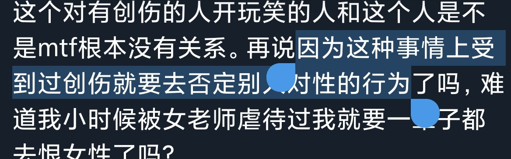
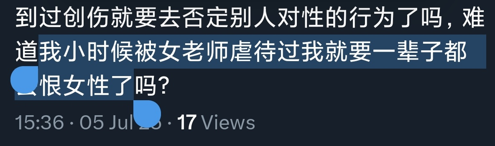

@DOUFUNAO_ever @hhjnjkoguyunmo 对，我就是这么认为的。我有性方面的创伤我就是接受不了别人用性工作当做赚钱的方法，但他要是非要这么做那我只能离他远点。我被男的虐待过我就是一辈子恨amab，怎么了？你懂个屁的创伤，你就是站在上帝视角说让别人都宽容点包容点原谅别人，你根本不懂创伤带来的痛苦。



@zqtlovekris99 @hhjnjkoguyunmo 哪个正常人会明知道对方在有被性骚扰性侵犯的创伤的情况下拿这个对对方开玩笑？会拿这个对有创伤的人开玩笑的人和这个人是不是mtf根本没有关系。再说因为这种事情上受到过创伤就要去否定别人对性的行为了吗，难道我小时候被女老师虐待过我就要一辈子都去恨女性了吗？